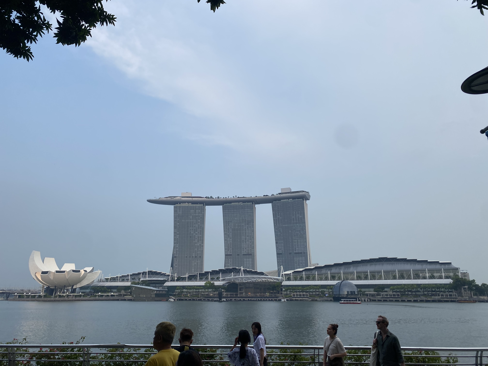
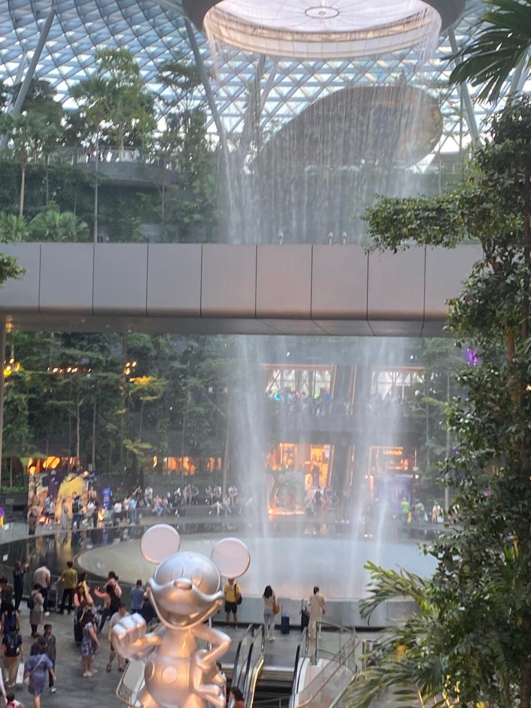
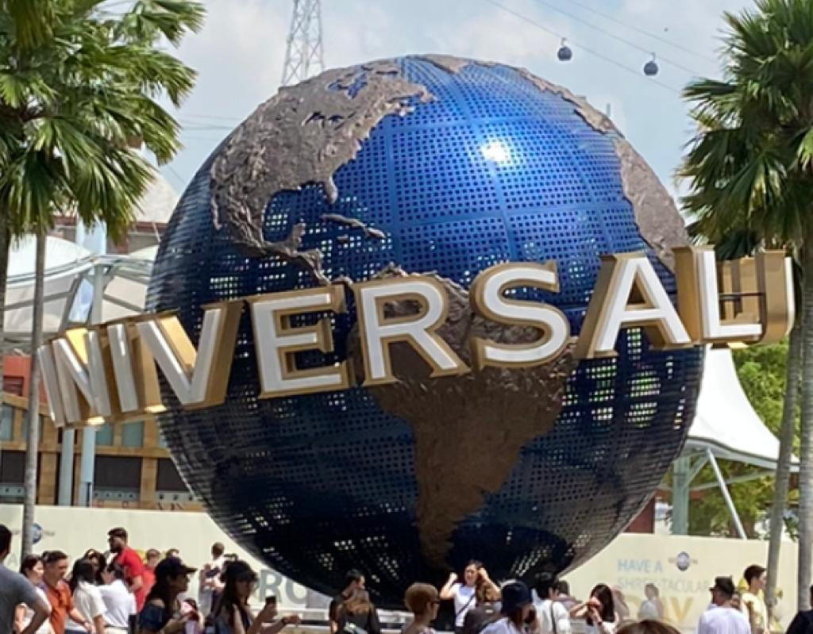
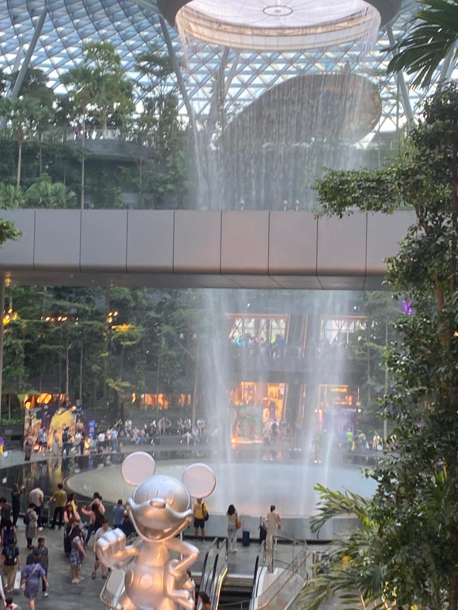
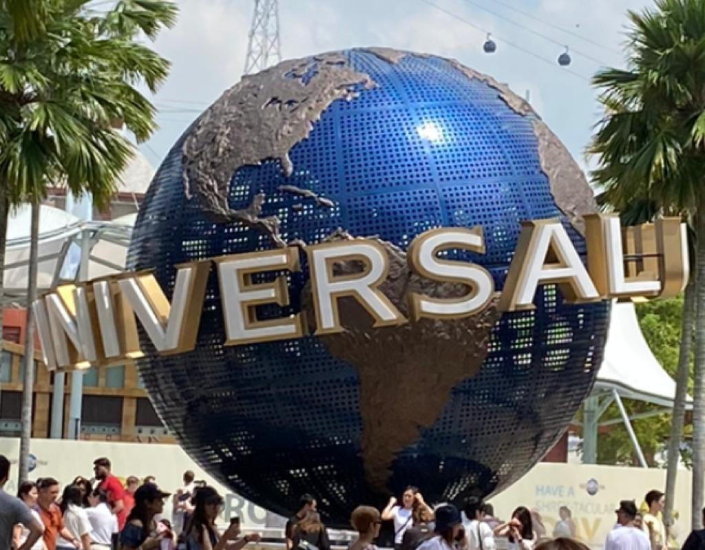
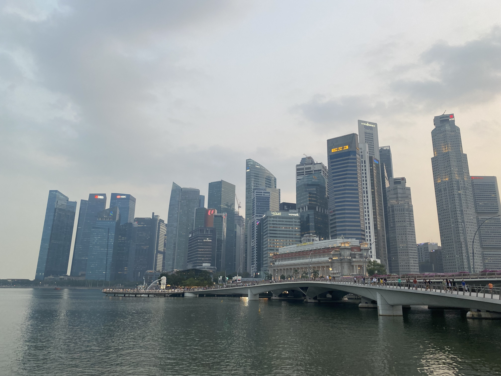
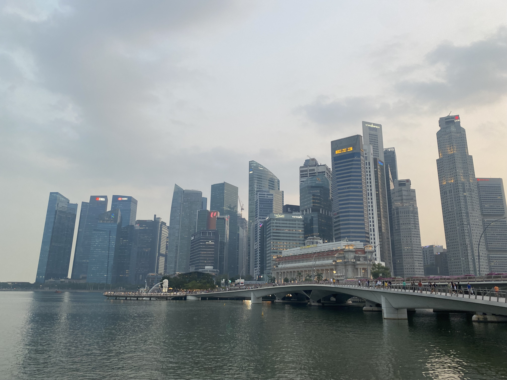

Singapore is a small island country that can be found in Southeast Asia, at the end of the southern tip of the Malay peninsula. The four main races of Singapore are the Chinese, Malays, Indians, and some Europeans. So, the four main and national languages of Singapore would clearly be English, Mandarin Chinese, Malay, and Tamil. But you can still find much more races and languages (or dialects) spoken in the country.
Singapore has a very interesting and unique history. Even before it was an independent country, Singapore became part of mostly by three territories: Britain, Japan, and Malaysia. Singapore was first part of various kingdoms and tribes, then it became part of the British Empire since the 1800s, then it was conquered by Imperial Japan during World War II, then it returned to being a part of the British Empire after it was free, and lastly, it became a Malaysian state for 2 years before it finally turned into an independent country in 1965.
Singaporeans are mostly known for their friendly, hospitable, and very, very, very hardworking nature. Since they are in a country with many different types of people, they are also known for being very respectful of other beliefs and cultures. Singaporeans are also very law-abiding people, since Singapore is a country with very strict rules and punishments. Overall, Singaporeans are both diverse and dynamic people that have a unique blend of cultural influences and a strong sense of national identity.
 



 

( I took every picture above except the Merlion :3 )